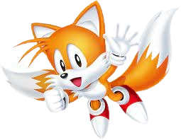

Tails Facts
Here are some facts about Tails, Sonic's best friend and sidekick.
Tails Facts
Sonic is Tails' best friend and partner in many adventures.
Tails, also known as Miles Prower, is
Sonic's
best friend and sidekick.
He has two tails that he can use to fly, making him a valuable ally to
Sonic
.
Tails is an expert mechanic and inventor, often assisting
Sonic
with gadgets and inventions.
His first appearance was in the game "
Sonic the Hedgehog 2
" released in 1992.
Tails is known for his kind and friendly personality.
He can spin his tails like helicopter blades to achieve flight.
He is one of the core members of Team Sonic, alongside
Knuckles
and
Sonic
.
